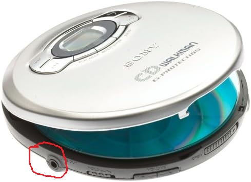

Frequently Asked Questions
Here's a list of our most frequently asked questions about the product.
- How do I reset my CD player?
- Resetting your CD player is a good option for when the device is acting unusual or frozen. Your CD player may or may not have a reset button. Turn your CD player over and look at the back or bottom. You may see a small reset hole. This can be pressed down using a pen or paperclip. Hold for thirty seconds and turn the device back on.
- If you do not see a way to explicitly reset your CD Player, the same effect can be achieved by unplugging the device and taking the batteries out for thirty seconds, reinserting the batteries and plugging the device up to power.
- Can I connect my CD player to my headphones?
- Yes, look for the hole to insert the jack located at the top or front of your CD player. the jack to your headphones can be inserted so now only the user wearing the headphones can hear the tracks. Most CD players support 3.5mm headphone jacks. The picture below has the jack circled.
- Why does my CD player say "No Disc"?
- There could be a few things going on in this senario. Make sure that you have a disc inserted into your CD player. If you do have a disc, please make sure that the bottom of the CD (the shiny side) is facing down, and the label side is facing up so that the device can read the disc. If you're still having problems, it may be that your CD is scratched and the CD player cannot read the data properly. You can also try and reset the device and see if the problem resolves. See the troubleshooting page for more.
- How do I put a specific track to repeat?
- There should a button on your CD player that says "REPEAT" or a label that looks like looping arrows. Press this button while the track you wish to repeat is playing. Press the button once to repeat the song once, and press it twice to repeat the song an unlimited amount of times.
- How do I stop playback?
- Simply press the "STOP" button (usually denoted as a shaded square), or turn off the CD player.
